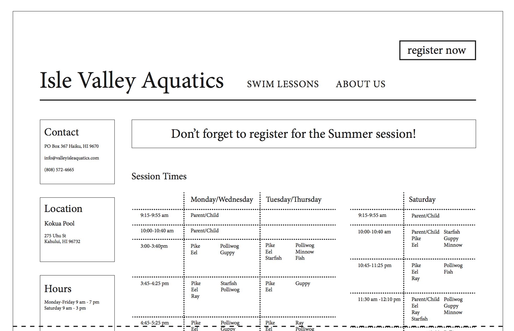
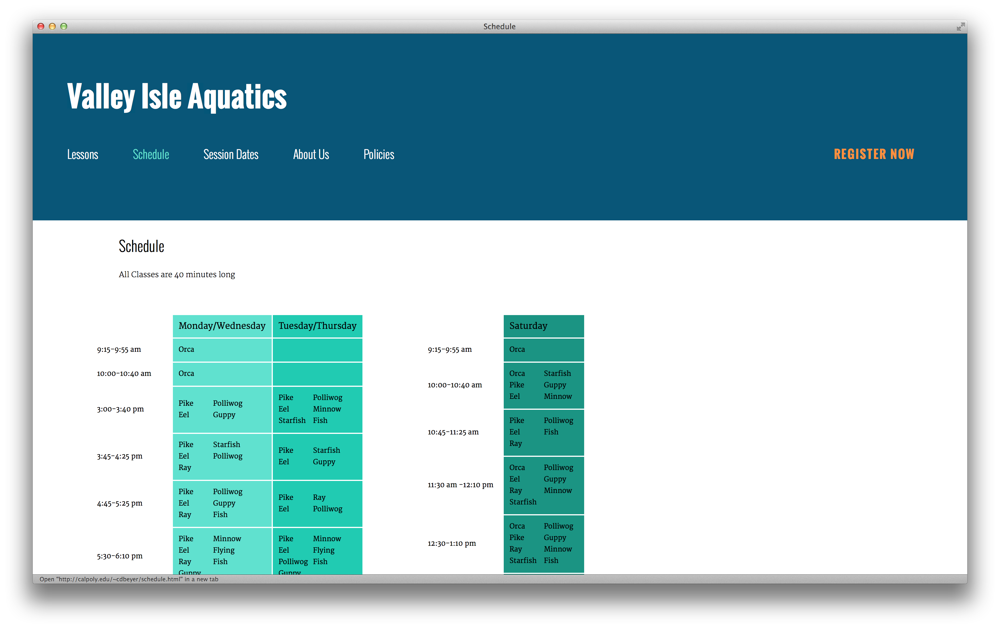
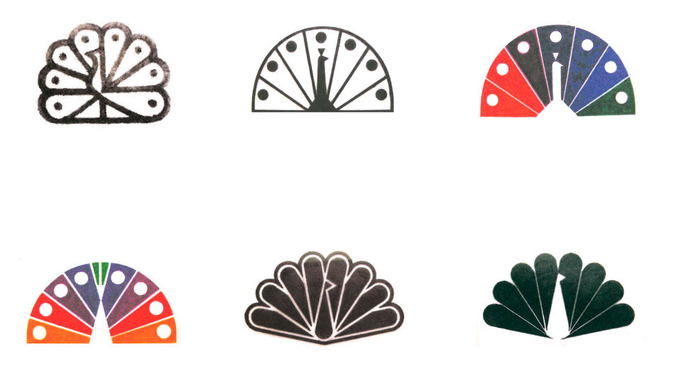

Just like you, I have two design principles assigned to me. This is an example of how I can succinctly present them using both the book theory and my own words:


According to the book, prototyping is “the creation of simple, incomplete models or mockups of a design”. There are different kinds of prototyping; they are used for different purpose during the design process. These space claim prototypes—made by Marker Maker Creative using PU foam—are examples of throwaway prototype, make it possible to learn quickly what the packaging shape will look like once it’s done.
The second example is a wireframe for a web page, designed by the student Carrie Beyer. Wireframes are concept prototypes. This approach helps communicate the concepts to others, reveals design requirements and problems, and allows for evaluation by a target audience. The key point to choose what’s the best prototype is to decide on what needs to be learned next.
week, followed by the week number. a, if it’s Tuesday; or b, if it’s Thursday. ‑) (not underscore). group, followed by your group number. ‑) (again, not underscore). 1 for the physical example; or 2 for the web example. week1a-group1-1.png (physical example)
week1a-group1-2a.png (web example, first image)
week1a-group1-2b.png (web example, second image)
After receiving a grade for the first submission, I’d be able to submit my examples for my second design principle, in this case, Iteration.


According to the book authors, design iteration is “the expected iteration that occurs when exploring, testing, and refining design concepts. Each cycle in the design process narrows the wide range of possibilities until the design conforms to the design requirements.” The first example is a series of sketches made by Tom Geismar and Ivan Chermayeff for the NBC logo. These sketches make it clear that, instead of falling in love with their first idea, Geismar and Chermayeff explored different options for the peacock logo before deciding which would work best for the problem at hand.
The second example shows two different high‑fidelity layouts for the redesign of the Nielsen Norman Group homepage, done in‑house. Even though, we can look at those two options and see them as equally valuable, it can assumed that the Nielsen Norman Group had established clear criteria to evaluate each iteration before the design could be considered complete.
Using the name convention lastname-name-of-the-principle-number.png, my files will be named:
ribeiro-iteration-1a.png (physical example, first image)
ribeiro-iteration-1a.png (physical example, second image)
ribeiro-iteration-2.png (web example)
{kind=link}
{kind=link}
{kind=link}
{kind=link}
{kind=link}
{kind=link}